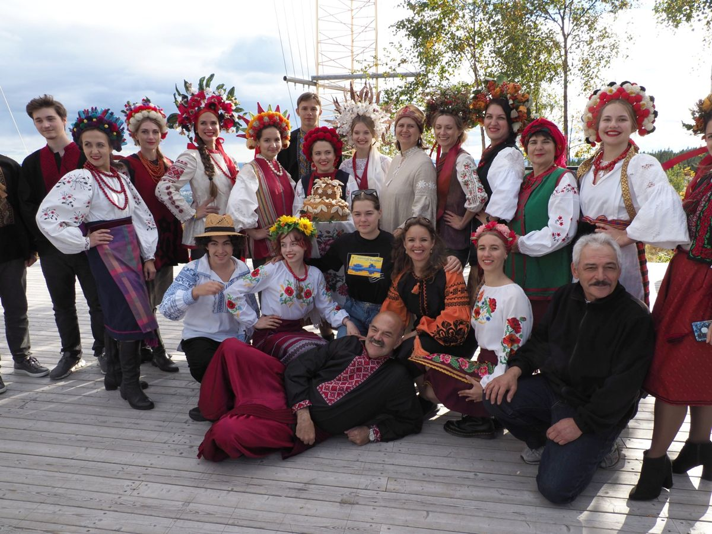

Oslo · mai og september 2022
Ukrainske folkedrakter på Roseslottet
Visning av egen kolleksjon av folkedrakter og blomsterkranser. Samme år ble draktene vist på kulturdagene Katya arrangerte i Nordre Follo.
- Rolle
- Designer og ansvarlig for visningen
- Partnere
- Ukrainsk forening Øst-Norge, Stiftelsen Roseslottet
- Omfang
- 13 egensydde drakter